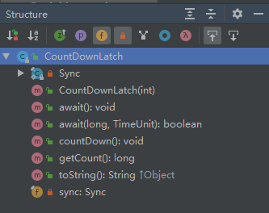

JDK源码之CountDownLatch
2018-08-21
次访问
CountDownLatch
CountDownLatch 也称为闭锁。使用共享锁的原理用来解决
实现
CountDownLatch 的接口如图所示。

1 | public void await() throws InterruptedException { |
与 ReentrantLock 一样，其也有一个内部类 Sync，继承了 AbstractQueueSynchronizer类。主要接口方法全权委托 Sync 去实现。
CountDownLatch 的构造函数如下所示：
1 | public CountDownLatch(int count) { |
而 Sync 的构造函数如下：
1 | Sync(int count) { |
可以看到，Sync 是将 AQS 内部的 state 变量作为一个计数变量来实现的。
1 | protected int tryAcquireShared(int acquires) { |
调用 await 方法的时候就去获取共享锁，如果 state 变量的值不为 0，则线程排到等待的阻塞队列中，直到被唤醒。
（未完。。。）